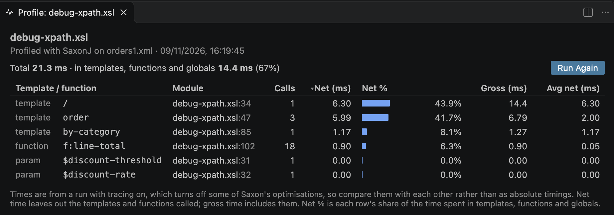

Profiler
To find where a stylesheet spends its time, profile it: the stylesheet runs as Quick Run runs it, with Saxon timing each template, function and global variable, and the times are shown in the Profile view - the slowest first - and above each declaration in the editor.
Profiling a stylesheet

With the stylesheet in the editor, run XSLT: Profile Stylesheet - from the Command Palette, or the More Actions (...) menu in the editor's title bar.
The stylesheet runs as Quick Run runs it, using the same Quick Run task:
with the XML context file, or from xsl:initial-template when there's no context file, and
with the task's parameters - you're asked for the values of any required parameters, as when the task runs. When the
stylesheet is imported or included by another, you're offered the choice of profiling the parent
stylesheet instead.
The processor is the one Quick Run uses: SaxonJ or SaxonC. The run's output appears in the terminal as for a task, and its result file is written as usual. When the run ends, the Profile view opens beside the editor.
The Profile view
The view has a row for each template, function and global variable or parameter that ran, sorted by net time, the slowest first:
- Template / function - its kind, and a match template's pattern as written in the
stylesheet, with its mode, or the name of a named template or function, or
$namefor a global variable or parameter - Module - the module and line of the declaration
- Calls - how many times it ran
- Net (ms) - the time spent in it, leaving out the templates and functions it called
- Net % - its share of the time spent in all the templates, functions and globals, with a bar to compare at a glance
- Gross (ms) - the time spent in it, including the templates and functions it called
- Avg net (ms) - the net time for each call
Net times add up to the time spent in the templates, functions and globals, so the rows with the most net time are where the time goes. Gross times overlap - a template's gross time includes the gross time of everything it calls - so the template the run starts from has the largest gross time.
Click a column heading to sort by it, and again to reverse the order. Click a row, or press Enter on it, to go to its declaration, with its name or match pattern selected; the up and down arrow keys move between rows. Run Again profiles the stylesheet again.
The view's header shows the total time of the run, and how much of it was spent in the templates, functions and globals. The rest is time Saxon spends outside them, e.g. reading the XML source and writing the result.
Run settings
The times depend on the XML source and the parameters as much as on the stylesheet, so the view shows what the run used: the Quick Run task, the XML source and its size (or the initial template, with no source), the initial mode, each stylesheet parameter with its value - for a parameter you're asked for, the value you entered - and the number of runs. Click the Run settings line to show or hide them.
Times in the editor
While the Profile view is open, each profiled template, function and global shows its times above its declaration, in the stylesheet and the modules it imports or includes - for example:
3 calls · 1.20 ms net (13%) · 4.50 ms gross
<xsl:template match="order">
Click the times to show the declaration's row in the Profile view. As you edit a module, the times stay with their declarations, found by name, or by match pattern and mode. Close the Profile view to remove them.
Warm-up runs
The first time a stylesheet runs, the Java VM is still starting up and compiling code, so the first run's times include this warm-up. For a transform that takes a second or less, the warm-up can be most of the time: in one small example, the first run took 17 ms and later runs about 1 ms.
For times without the warm-up, set XSLT.tasks.profileRuns to the number of times to run the
transform, e.g. 5. The first run is then a warm-up run, left out, and the times shown are
the average of the other runs - the view's run settings say, e.g., average of runs
2-5. Each run takes as long as a Quick Run, so for a long transform, where the warm-up is a
small part of the time, one run is enough.
Earlier profiles
Each profile is kept, and listed in the stylesheet's Timeline view, in the Explorer - or right-click the stylesheet and choose Open Timeline. An item shows the time spent in the templates, functions and globals, the XML source and the runs; hover over it for the slowest rows. Click an item to show that profile in the Profile view again, e.g. to compare the times before and after a change.
The last 20 profiles are kept for each stylesheet, for each workspace.
What the times show
- Saxon times the run with tracing on, which turns off some of its optimisations, so the times are longer than in a normal run. Compare them with each other, rather than as timings of the stylesheet.
- Only templates, functions and global variables and parameters are timed - not each instruction or expression within them. An instruction's time is part of the net time of the template, function or global it's in.
- A global variable is evaluated when it's first used, so its time is also part of the gross time of the template or function that first used it.
- Times vary a little from run to run. For a small difference between two profiles, profile each version with several runs - see Warm-up runs.